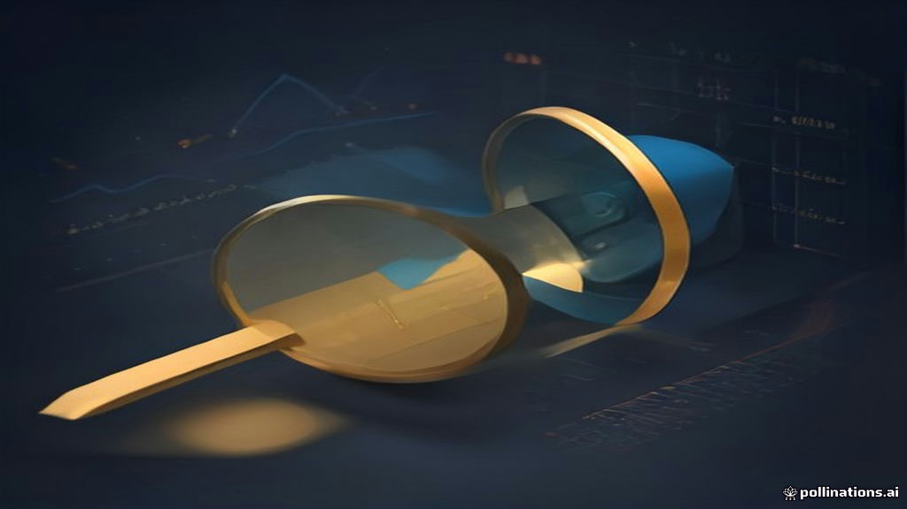
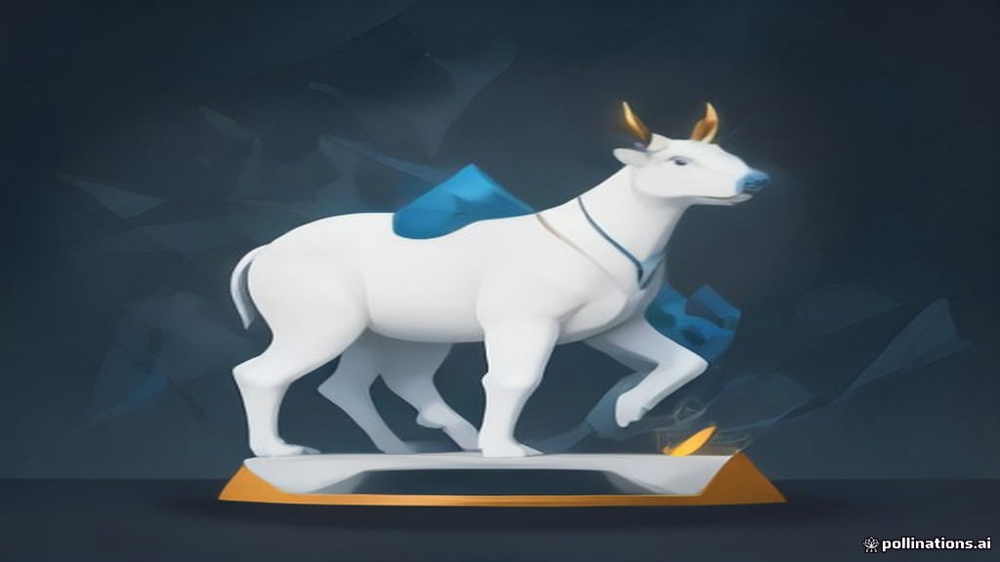

Latest insights
Personal-finance explainers, market briefs, F&O positioning and business stories — all in one place.
Jio Platforms IPO: Why Everyone's Talking About This Giant Listing
Jio Platforms, the digital arm of Reliance, has launched one of India's biggest-ever share sales. This Initial Public Offering (IPO) allows the public to buy .
Gold's Price Swings: Middle East Tensions and Fed Rate Path
Gold prices recently edged lower, influenced by a complex interplay of global events. Escalating geopolitical tensions in the Middle East often boost gold's a.
NPS vs Mutual Funds: Accessing Retirement Savings Before 60
The National Pension System (NPS) is primarily designed for long-term retirement savings with strict lock-in periods and specific withdrawal conditions until .
Pre-Market Brief — 22 October 2026
Global Tone:** US markets closed positive, but Asian markets are largely negative this morning, signalling a mixed start. **GIFT Nifty Bias:** Points to a fla.

Mutual Fund Growth vs. IDCW: Understanding Returns & NAV
Growth plans reinvest all earnings, leading to an increase in the Net Asset Value (NAV) and compounding wealth over time. IDCW (Income Distribution cum Capita.
Your Clothes Just Got a 'Made in India' Boost: Understanding the PLI Scheme
The government offers special incentives to companies that make certain goods in India. This is called the Production-Linked Incentive (PLI) scheme, and it ai.
Gold's Steadying Act: Geopolitics, Rates, and Your Portfolio
Gold prices are currently stable, reflecting market uncertainty due to mixed signals regarding efforts to resolve the Iran conflict. Geopolitical tensions typ.
ULIP vs. Term Plan + Mutual Fund: The ₹2.5 Lakh Line that Decides
For Unit-Linked Insurance Plans (ULIPs) issued on or after February 1, 2021, maturity proceeds are tax-exempt only if the annual premium is ₹2.5 lakhs or less.
Market Wrap — 21 October 2026
Indian equities witnessed a broad-based decline today, with all major indices closing in the red. The market was primarily weighed down by significant selling.

Pre-Market Brief — 21 October 2026
Global markets presented a mixed picture overnight, with US indices largely positive but Asian markets showing weakness this morning. GIFT Nifty is signalling.
HDFC Bank Q2: Green Shoots Signal Future Growth
HDFC Bank reported a 4.7% year-on-year rise in net profit to ₹19,510 crore for Q2 FY27. Net Interest Margin (NIM) declined to a 12-quarter low of 3.16%, partl.
India F&O Pulse — 21 Oct 2026: what the day's options & futures positioning is whispering
End-of-day reading of India's F&O open interest, PCR, max pain and FII positioning — explained simply.
Home Loan Rate Hike: Higher EMI or Longer Tenure?
When home loan interest rates rise, borrowers typically face a choice between increasing their monthly EMI or extending their loan tenure. Increasing your EMI.
Market Wrap — 20 October 2026
Indian benchmark indices, Nifty 50 and Bank Nifty, witnessed a decline today, closing over 1% and 0.6% lower respectively. Weak global cues, particularly from.
Pre-Market Brief — 20 October 2026
Global cues are mixed, with US markets closing positive but Asian indices showing weakness this morning. GIFT Nifty indicates a flat to slightly negative open.
Navigating Short-Term Stock Picks: Just Dial, BSE, Orient Hotels
Anand Rathi's expert, Jigar S. Patel, suggests investors avoid panic and consider buying during market dips. He has identified short-term buying opportunities.
India F&O Pulse — 20 Oct 2026: what the day's options & futures positioning is whispering
End-of-day reading of India's F&O open interest, PCR, max pain and FII positioning — explained simply.

What Are India's Foreign Exchange Reserves and Why Are They Changing?
India's foreign exchange reserves are like a country's savings account in foreign currencies and gold. They recently fell to around $726 billion as of October.
IPO Report Card: 30 to 60 Days After Listing — October 2026
This report covers 51 companies that listed on the stock exchanges between 31 and 59 days ago. 27 companies are currently trading above their initial public o.
₹1 Lakh Monthly Investments: Balancing Short Goals & FIRE
Achieving Financial Independence, Retire Early (FIRE) requires a disciplined approach to monthly investments. A ₹1 lakh monthly investment needs careful alloc.
NRI FCNR Deposits: Avoiding Currency Conversion Tax Errors
An NRI recently received relief from a ₹3.41 crore income tax addition due to a tax officer's currency conversion error. The officer mistakenly treated Japane.
Market Wrap — 19 October 2026
Indian equities witnessed a broad-based decline today, with Nifty 50 shedding over 1% and closing below 22,900. Global cues, particularly concerns from French.
Pre-Market Brief — 19 October 2026
Global markets presented a mixed picture, with US indices closing significantly lower, European markets also down, while some Asian counterparts saw modest ga.

Analysing Q2 FY26 Corporate Results: What Investors Need to Know
Q2 FY26 earnings season is underway, with over 35 companies, including Bajaj Finance and UltraTech Cement, announcing results today. We'll analyse hypothetica.
Upcoming IPOs, Explained Simply — October 2026
This week, four IPOs – Tonbo Imaging, Bonfiglioli Transmissions, Sahajanand Medical Technologies, and Zetwerk Manufacturing – are closing for applications. Ji.
India F&O Pulse — 19 Oct 2026: what the day's options & futures positioning is whispering
End-of-day reading of India's F&O open interest, PCR, max pain and FII positioning — explained simply.

Personal Finance explained
The Reserve Bank of India (RBI) has put strict rules in place to make digital loans safer for you. All online loans must come from banks or Non-Banking Financ.
RBI Repo Rate Hike: Impact on Your Home Loan EMIs
The Reserve Bank of India recently increased the repo rate by 25 basis points to 5.50%. This hike directly influences the interest rates on various loans, esp.
Taxing Profits on Apple, Nvidia Shares: ₹1.25 Lakh Exemption in India?
The ₹1.25 lakh Long Term Capital Gains (LTCG) exemption under Section 112A applies exclusively to Indian listed equities and equity-oriented mutual funds. Pro.
Who Keeps Our Stock Market Running Smoothly? Understanding Market Makers
Market Makers are financial firms or individuals who continuously offer to buy and sell specific shares. They ensure there's always someone willing to trade, .
Gold Loan EMI Default: When Your Pledged Jewellery is at Risk
Missing a single gold loan EMI does not immediately lead to the auction of your pledged jewellery. Lenders must follow a specific recovery process, including .
Voluntary Provident Fund: Should You Invest Beyond EPF?
Voluntary Provident Fund (VPF) allows salaried employees to contribute more than the mandatory 12% to their Provident Fund account. VPF offers the same intere.
ITC Q2 FY27 Results: Taxation Impact and Share Outlook
ITC has scheduled its board meeting to announce Q2 FY27 financial results. Analysts anticipate a potential decline in net profit for the quarter, primarily du.
Your Insurance Just Got a Digital Upgrade: What IRDAI Chief Ajay Seth is Planning
IRDAI Chairman Ajay Seth recently discussed big changes coming to how insurance is sold and managed in India. The regulator plans to cap commissions and expen.
Rising Inflation & Central Bank Policy: What it Means for You
Inflation is a persistent concern, eroding purchasing power and making everyday expenses costlier. Central banks like the RBI use monetary policy tools, inclu.
Diwali Bonus Tax: What Salaried Employees Need to Know
A Diwali bonus received from your employer is fully taxable as part of your salary income. This bonus is added to your total income and taxed at your applicab.

Market Wrap — 16 October 2026
The Indian equity benchmarks, Nifty 50 and Bank Nifty, closed higher today, marking a positive end to the week. A strong rally in the IT sector, driven by pos.
Pre-Market Brief — 16 October 2026
Global markets displayed a mixed-to-positive tone overnight, with US indices closing higher and Asian markets mostly in the green. GIFT Nifty is signalling a .
NVIDIA's Ascent to ₹8.3 Lakh Crore Quarterly Revenue: An Analysis
NVIDIA reported a record ₹8.0 lakh crore ($96.2 billion) in revenue for Q2 FY27, a 106% year-on-year increase, driven by AI demand. The Data Center segment wa.
India F&O Pulse — 16 Oct 2026: what the day's options & futures positioning is whispering
End-of-day reading of India's F&O open interest, PCR, max pain and FII positioning — explained simply.
Your Next Ride Could Be Electric: India's Big Push for Charging Stations
India is rapidly expanding its network of Electric Vehicle (EV) charging stations across the country. This push aims to make it easier for people to switch fr.
RBI Repo Rate Hike: Impact on Your Home Loan EMI
The Reserve Bank of India (RBI) has increased the repo rate by 25 basis points (bps) to 5.50% on October 7, 2026. This hike will directly affect your home loa.
EPF Withdrawal Rules: Form 121 Replaces Forms 15G and 15H
From April 1, 2026, a new declaration, Form 121, will replace Forms 15G and 15H for reducing TDS on certain incomes. This change impacts eligible taxpayers se.
Market Wrap — 15 October 2026
Indian equities saw a strong rebound today, with the Nifty 50 closing up over 1.6%. The rally was primarily led by robust buying in IT and Auto sectors, despi.
Pre-Market Brief — 15 October 2026
Global markets presented a mixed picture, with US indices closing lower and Asian markets mostly in the red, while European markets were flat. GIFT Nifty is s.

Exporter Dollar Sales Bolster Malaysian Ringgit: An Economic Analysis
Malaysian exporters are actively converting foreign currency earnings into Ringgit, strengthening the local currency. This trend is primarily driven by robust.
India F&O Pulse — 15 Oct 2026: what the day's options & futures positioning is whispering
End-of-day reading of India's F&O open interest, PCR, max pain and FII positioning — explained simply.